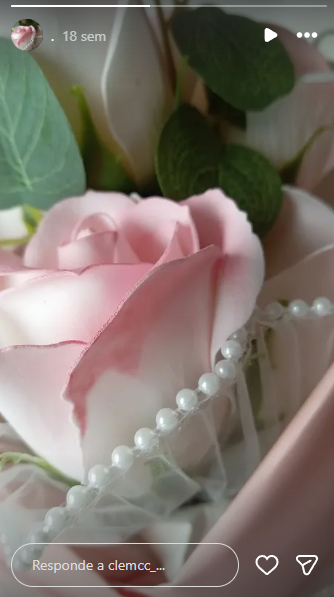

Detalles que importan
Pequeños elementos, grandes sensaciones.

diseño personalizado
Una pequeña demostración de cómo una página puede sentirse única: estética cuidada, interacción suave y detalles pensados para contar una historia sin decirlo todo de frente.
Pequeños elementos, grandes sensaciones.
Patrones, tonos y combinaciones con carácter.
Colores cálidos, luz suave y calma creativa.
Música, silencio y buenos momentos.
Indie pop · Calm · Focus
01 Velvet Dreams 3:42
02 City Lights 2:58
03 Distant Shores 4:21
demo interactiva
Sitios web que no solo se ven bien: se sienten fluidos, responden al movimiento y transmiten una identidad visual clara.
galería
Una composición de referencias, colores y pequeños detalles.